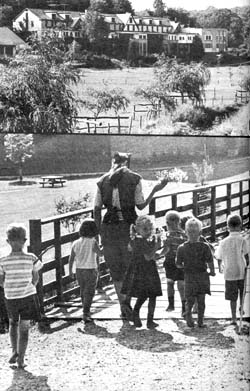
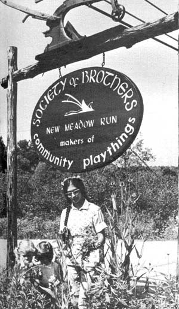
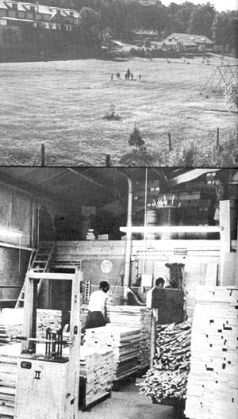
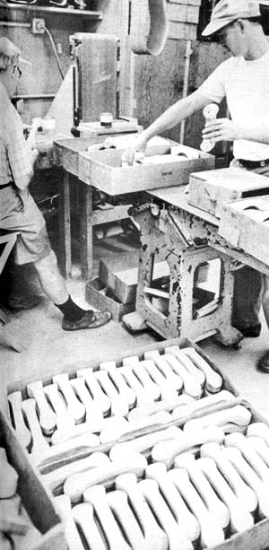
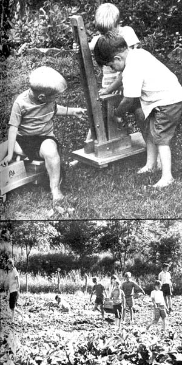

The Society Of Brothers
Here is another example of a commune that has endured for a length of time, organized around a very strong and dynamic leader.
By Barry Fishler/ Cover Photos By Andrew Schneider
November/December 1971
Folks keep asking us if we know of a commune that has endured for any length of time . . . and we keep answering that the only communes which seem to conquer time are those organized around [1] a very strong and dynamic leader or [2] a heavy religious trip. THE GROUP (reported on in MOTHER NO. 10) is an example of the first . . . and here's a sample of the second.
The guys in the Hawaiian shirts who come to rubberneck the tourist spots on Pennsylvania's Route 40 usually go right on by the Society of Brothers' toy-making commune at New Meadow Run. Maybe that's because nobody stands outside hawking souvenir salt shakers and painted porcelain plates with pictures of George Washington on them.
But the tourist profiteers and the national battlefields really have nothing on the Society . . . because behind their humble sign on Route 40, the brothers are quietly proving that a well-operated commune can go just about as far as its members want to take it. Through determination and years of hard work, the brothers have created a burgeoning toy business that today-along with a publishing enterprise-makes the commune completely self-sufficient.
Nor does the success of the New Meadow Run community mark the upper limit of the brothers' accomplishment. The Society also collectively owns two other prosperous settlements at Rifton, N.Y. and Norfolk, Conn. At all three communes, the brothers practice what they believe to be the most harmonious mode of existence possible to man.
"What we want to demonstrate," one of the brothers told us as we walked through the 140 sprawling acres at New Meadow Run, "is that people can live together in real unity. That's the primary need in life today. It's our feeling that people can be united without giving up their conscience. Man was made to.live the way we're living."
At times in its history, though, it appeared that the brothers would not be permitted to live in this or any other way.
The Society was formed when, amid the disillusionment that spread across Europe at the end of World War I, a small group gathered together near the village of Sannerz, Germany (northeast of Frankfurt-on-Main) in search of a positive alternative to the life they saw around them. The people who assembled were especially disturbed by remnants of the war time spirit, which glorified loyalty to the Fatherland above the dictates of one's own conscience.
They were Christians and they sought, in their own words, "to live out the Sermon on the Mount" in all facets of their life.
By 1926 the Society had moved to a large nearby farm, which they called Rhoen Bruderhog (place of the brothers), and the commune slowly began to grow.
With the coming of Hitler in 1933, however, things changed. The Society was forbidden to have guests or to sell its publications. When the Reich finally attempted to impose a Nazi teacher on the commune children, the brothers quickly sent their young to Lichtenstein . . . and the men of draft age followed shortly before the advent of conscription.
The Nazis, naturally, were in furiated by this disobedience and, in 1937, the Gestapo ordered the community to dissolve. Members of the Society were permitted to leave for England, where earlier exiles-with only what they could carry out of Germany-had established a small branch community at Cotswald.
The brothers soon opened a second commune in England, but when Britain entered the war the Society was faced with a critical choice . . . to let its German members be interned by the English or to find another home. The group chose to move to Paraguay-the only nation offering immediate asylum-and waited out the conflict in the back woods.
In 1954, with the war well behind them, the brothers established their first American community at Rifton. They embarked on their toy-making venture that same year.
The decision to make toys was a logical one for the Society of Brothers. They had searched around and experimented with different methods of supporting themselves, until they realized that the manufacture of playthings was most consistent with their concern for children.
That concern is evident throughout the commune. On the grounds, small groups of young children wander with teachers who try to integrate the lessons of nature with those of the classroom. Birds that were pictures in a book are seen flying through the air . . . flowers have depth and scent . . . squirrels bark from trees.
Shetland ponies wander the grounds, too . . . often with pony carts behind them. By comparing these horses and the cars in the parking lot, the children develop a feel for both the old ways and the new . . . and walking among the cars-feeling and touching them-is as much a part of their education as watching the ponies.
Nor are the children in any way lesser members of the community.
Each type of work is given equal value, so that youngsters who gather flowers are regarded just as highly as the toymakers, even though the flowers are for decoration and the toys for income. The Society encourages each member to contribute his best work to the commune, no matter what that "best work" may be.
The toys that largely support the Society are marketed under the tradename Community Playthings through the home at Rifton.
The brothers' catalog features over 50 pages of wooden toys, and one thing stands out about them all ... quality. These are sturdy toys, the kind no one seems to make anymore, and-because they're good-they don't come cheap. You can expect to pay up to $10 for a small one . . . over $100 for a large, complicated set.
None of the playthings made by the brothers has any baby blue ducklings scampering over the bolts or pink curlicues running up and down the sides . . . and all you have to do is think about it to know that the Society is right.
Kids don't need any of the wonderful geegaws that Madison Avenue always tries to pour over their toys. . . the decorations they have real use for will come right out of their own heads. If you have any doubts about that, think back to the packing crate you had when you were a child . . and how it had become a castle by the time your imagination got through embellishing it and moving in furniture, paintings, butlers, carpets and guests.
So the toys made by the brothers remain simple . .. variations of spheres, cubes, cones and rods. And they're built for youngsters to play with, not for adults to covet through department store windows. A great deal of the Society's business comes from kindergartens, nursery schools and the like . . . a fact that testifies to the sturdiness and flexibility of its products.
The brothers give special care to those "little" qualities which tend to be left out of assembly line toys ... qualities like practicality and interchangeability. Community Playthings are made to be pushed pulled, sat on, knocked over, picked up and just plain enjoyed. They're also made to go together. Any wooden railroad car can be attached to the end of a like-sized train, the automobiles will fit into the appropriate rack on the transporter trucks, and so on. Every toy must pass a stringent inspection at each step of its assembly too, and the less-thanperfect ones just don't make it.
The Society's concern for the children's playthings it makes is merely a reflection of its regard for the children in its own community. After going through the eighth grade at the commune's school, each child is sent to an outside high school and given two years of higher education before being asked if he or she wished to remain with the Society. It's a hefty decision, and the members want every youngster to have a perspective on the world before making the choice.
If a youth does decide to stay, he will be choosing a life that includes two common meals a day (breakfast is taken with one's own family), assigned housing based on the size of the family and a life in accordance with the Society's expression of Christian brotherhood where all property is held in common and all decisions and policies are ultimately traceable to unanimity. The young person will also be accepting life in a semi-closed community where visitors with a sincere interest are welcome . . . as long as they write or call ahead and come with the understanding that-if their stay permits-they will share in the work and life of the commune.
The brothers' dedication to their work and to their Christian communal life style doesn't automatically create a completely cloistered life at the community, however. There's smoking and drinking in moderation, and athletic facilities dot the area. Really, the only things missing are the souvenir salt shakers and the porcelain pictures of George Washington.
Hard at work, and at peace with themselves and one another, the brothers don't seem to notice.
|
 FAR ABOVE: The Society of Brothers commune appears far from the maddening crowd . . . although located on the edge of U.S. 40 near New Meadow Run, Pennsylvania. The Society maintains two other locations in the United States. ABOVE: The whole world, beginning with the community's front lawn, is a classroom for the Society's children. |
 The Society of Brothers' children and their teacher pick flowers at the entrance to the New Meadows Run community. |
 FAR ABOVE: If children seem especially favored by the Society of Brothers, perhaps it's only because the people who live in the peaceful settlement support themselves largely by making toys for the youngsters of this and other countries. ABOVE: The brothers will soon turn this choice maple lumber into substantial wooden toys. |
|
 Every toy made by the brothers?including these wooden telephones ?must pass the most stringent of inspections during assembly, |
 ABOVE: The brothers' toys are so popular they're produced on mini-assembly lines. |
 FAR ABOVE: The playthings made by the Society are designed for children's use rather than parent's looks. Here some satisfied customers attest to the logic of that policy. ABOVE: Youngsters raised at New Meadow Run are given every opportunity to experience life firsthand before making the big decision: shall I move away"" . .. or stay with the Society all my life? |